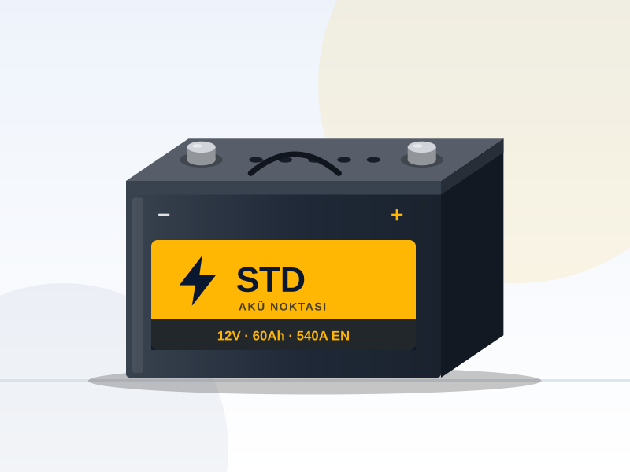
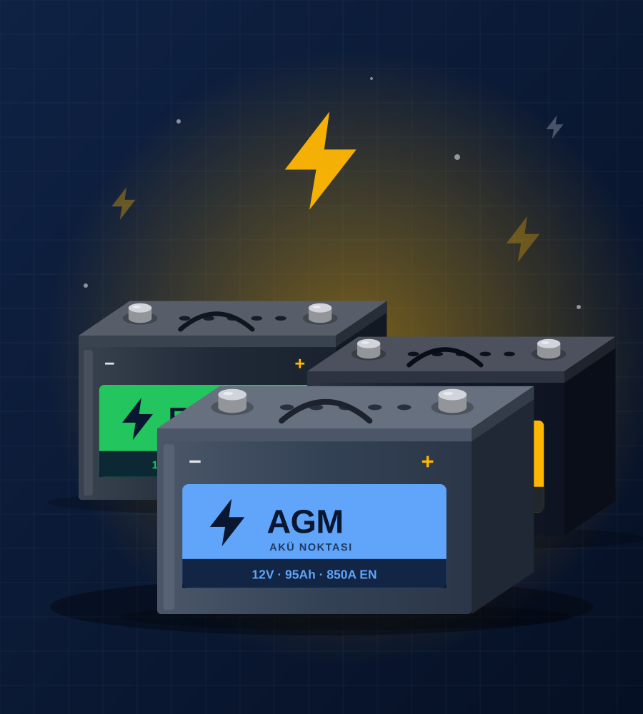
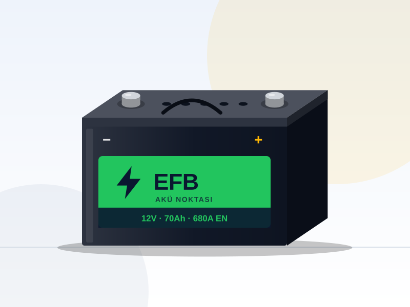
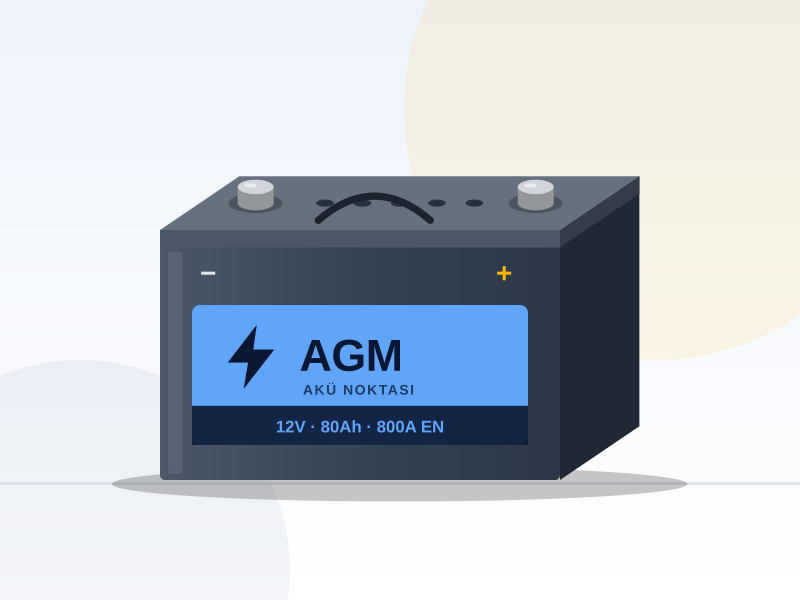
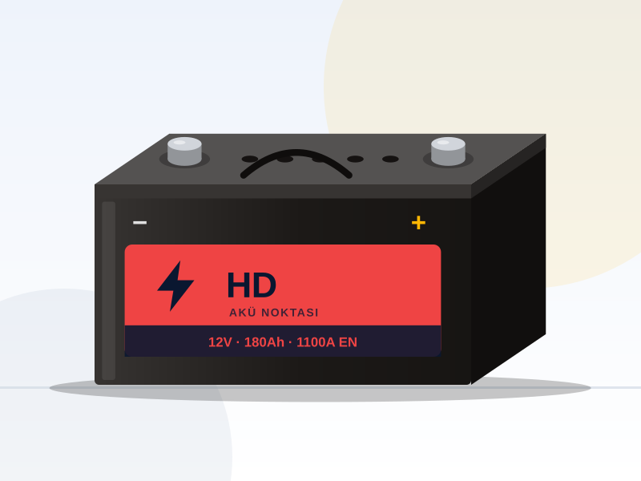
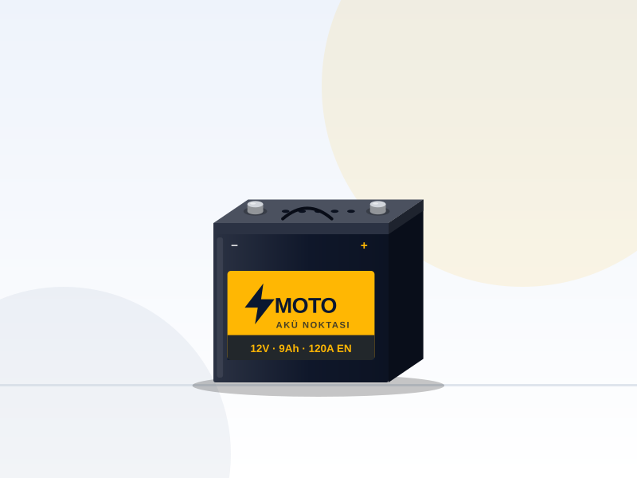
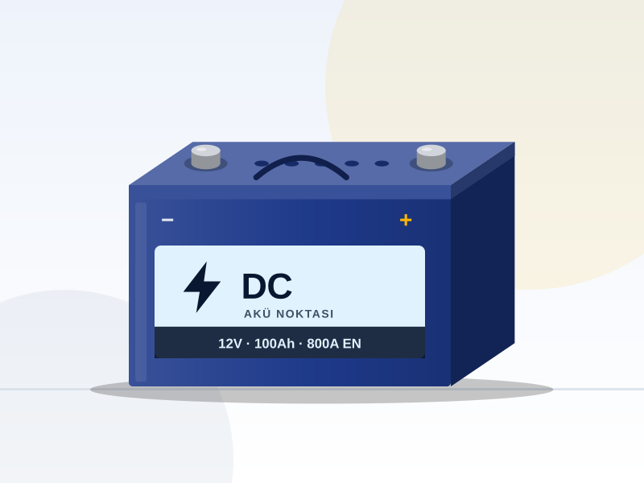
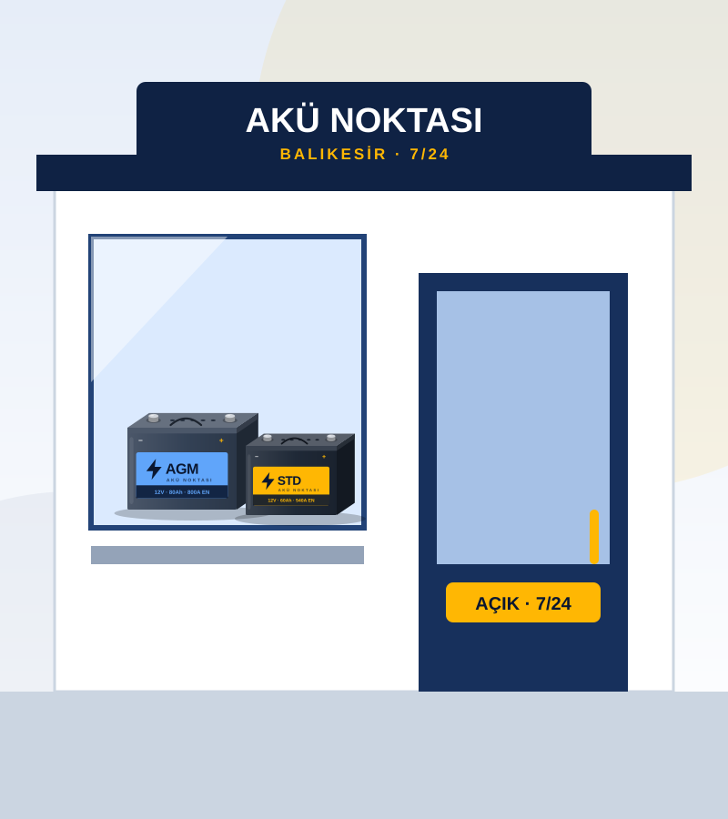
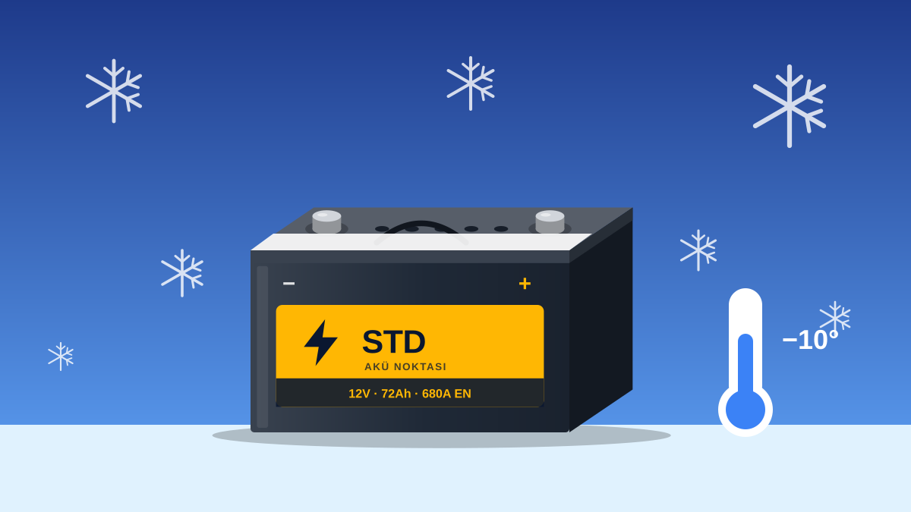
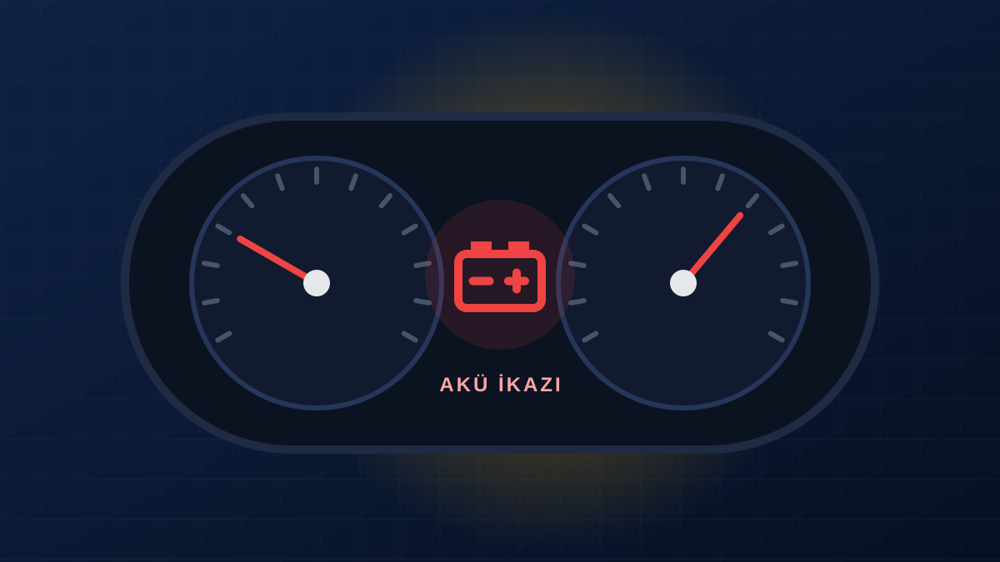

35–74 Ah
Balıkesir'de 7/24 Akü Servisi
Aküsü biten araca dakikalar içinde enerji veriyoruz.
Akü satışı, yerinde akü değişimi, akü şarj ve takviye ile oto elektrik hizmetlerinde Balıkesir'in güvenilir adresi. Gece ya da gündüz, tek telefonla yanınızdayız.
- Yerinde cihazlı akü testi
- Garantili ürünler
- Eski akü geri dönüşümü

7 Gün 24 SaatBayram, hafta sonu dahil
Yerinde DeğişimBulunduğunuz konuma geliyoruz
7/24 Hizmet
Gece yarısı da arasanız ulaşırsınız.
Cihazlı Akü Testi
Tahmin değil, ölçüm ile teşhis.
Garantili Akü
Üretici garantili sıfır ürünler.
Geri Dönüşüm
Eski aküleriniz çevreye zarar vermez.
Hizmetlerimiz
Akü ile ilgili her ihtiyacınız tek noktada
Doğru akü seçiminden yerinde montaja, şarj sisteminden elektrik arızalarına kadar uçtan uca kurumsal hizmet.
Akü Satışı
Otomobil, SUV, ticari araç, ağır vasıta ve motosikletler için her amperde sıfır ve garantili aküler.
Detaylı bilgiYerinde Akü Değişimi
Evinizin önünde, iş yerinizde ya da yolda; bulunduğunuz konuma gelip aküyü yerinde değiştiriyoruz.
Detaylı bilgiAkü Şarj ve Takviye
Biten akünüze anında takviye, profesyonel cihazlarla kontrollü şarj ve kapsamlı akü testi.
Detaylı bilgiOto Elektrik Hizmeti
Şarj dinamosu, marş motoru, kaçak akım ve tüm elektrik arızalarında uzman teşhis ve onarım.
Detaylı bilgi
Akü Markaları
Güvendiğiniz markalar, geniş stok
Yerli ve ithal akü markalarında binek, ticari ve motosiklet aküleri.
Akü Çeşitlerimiz
Her araca uygun akü, stokta
Binek araçtan ağır vasıtaya, motosikletten tekneye kadar doğru teknolojide sıfır ve garantili aküler.

45–80 Ah
60–105 Ah
100–225 Ah
4–20 Ah
80–200 Ah
7/24Balıkesir genelinde yerinde akü servisi
Neden Akü Noktası?
Aküde uzman, hizmette kurumsal
Akü Noktası Balıkesir, Altıeylül'deki servis noktasından tüm Balıkesir'e hizmet veren bir akü ve oto elektrik merkezidir. Amacımız basit: aracınızı en kısa sürede, doğru aküyle ve şeffaf bir fiyatla yeniden yola çıkarmak.
- Her amperde geniş stok
- Yerli ve ithal markalar
- Start-stop / AGM uzmanlığı
- Cihazla şeffaf ölçüm
- Yerinde montaj
- Faturalı ve garantili satış
Nasıl Çalışıyoruz?
Dört adımda yeniden yoldasınız
Aküsü biten bir aracı yeniden çalışır hale getirmek için izlediğimiz net ve hızlı süreç.
Bizi arayın
Telefon veya WhatsApp ile ulaşın, aracınızı ve konumunuzu paylaşın.
Yanınıza gelelim
Mobil servis aracımız uygun akü seçenekleriyle bulunduğunuz yere gelir.
Test edelim
Akü ve şarj sistemi cihazla ölçülür, sonucu birlikte görürüz.
Değiştirelim
Gerekirse aküyü yerinde değiştirir, eski aküyü geri dönüşüme alırız.
Akü Amperleri
Aracınıza uygun akü kaç amper?
En sık kullanılan akü kapasiteleri ve uygun araç tipleri. Tam liste için amper tablomuzu inceleyin.
| Kapasite | Soğuk Marş (CCA) | Teknoloji | Uygun Araçlar | Kategori |
|---|---|---|---|---|
| 45 Ah | 360–400 A | StandartEFB | 1.0–1.3 benzinli küçük hatchback araçlar | Otomobil |
| 60 Ah | 510–540 A | StandartEFB | C segment benzinli otomobiller, kompakt sedanlar | Otomobil |
| 72 Ah | 680 A | StandartEFB | Dizel sedan, orta sınıf otomobiller | Otomobil |
| 80 Ah | 740–800 A | EFBAGM | Üst sınıf sedan, SUV, start-stop araçlar | SUV / Hafif Ticari |
| 100 Ah | 830–900 A | StandartTicari / HD | Panelvan, minibüs, pick-up | SUV / Hafif Ticari |
| 150 Ah | 1000 A | Ticari / HD | Kamyon, otobüs, iş makinesi | Ağır Vasıta |
Makaleler
Akü hakkında bilmeniz gerekenler
Uzman ekibimizden akü bakımı, doğru seçim ve arıza belirtileri üzerine rehber yazılar.

Akü Ömrü Nasıl Uzatılır? Uzmanından 7 Altın Kural
Akülerin büyük bölümü yaşlılıktan değil, ihmalden ölür. Akünüzün ömrünü yıllarca uzatacak yedi basit ama etkili kuralı derledik.
Devamını oku
Kış Aylarında Akü Neden Biter? Soğuğa Karşı Hazırlık Rehberi
Soğuk bir sabah marşa basıp sessizlikle karşılaşmak istemiyorsanız, kış gelmeden aküyü hazırlamanın yollarını öğrenin.
Devamını oku
Aküm Bitiyor mu? Gözden Kaçmaması Gereken 6 Belirti
Akü genellikle bir anda değil, haftalar öncesinden sinyal vererek biter. Bu altı belirtiyi tanıyan sürücü yolda kalmaz.
Devamını oku